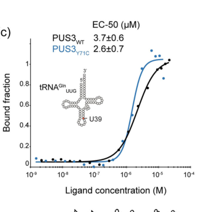

PUS3 encodes a pseudouridine synthase that catalyzes the isomerization of uridine to pseudouridine specifically at positions 38 and 39 in the anticodon stem-loop of cytosolic tRNAs. It functions as a stand-alone enzyme that directly binds tRNA without requiring guide RNAs. The protein forms a homodimer through a C-terminal coiled-coil domain and localizes to both nucleus and cytoplasm. PUS3 is critical for neurodevelopment, with biallelic loss-of-function mutations causing an autosomal recessive intellectual disability syndrome (NEDMIGS/MRT55) characterized by global developmental delay, hypotonia, microcephaly, and seizures.
| GO Term | Evidence | Action | Reason |
|---|---|---|---|
|
GO:0009982
pseudouridine synthase activity
|
IBA
GO_REF:0000033 |
ACCEPT |
Summary: PUS3 catalyzes pseudouridine formation in tRNA as demonstrated experimentally (PMID:27055666). The IBA annotation is well-supported by evolutionary conservation of this function across the TruA/Pus3 family from bacteria to humans.
Reason: This annotation accurately captures PUS3's core enzymatic function. The protein has been experimentally validated to catalyze the isomerization of uridine to pseudouridine in tRNAs, with loss-of-function mutations abolishing this activity in patient cells.
Supporting Evidence:
PMID:27055666
Consistent with the known role of Pus3 in isomerizing uracil to pseudouridine at positions 38 and 39 in tRNA, we found a significant reduction in this post-transcriptional modification of tRNA in patient cells.
|
|
GO:0031119
tRNA pseudouridine synthesis
|
IBA
GO_REF:0000033 |
ACCEPT |
Summary: PUS3 specifically synthesizes pseudouridine in tRNAs at positions 38/39 of the anticodon loop. This function is conserved across the TruA/Pus3 family and experimentally validated.
Reason: This accurately describes PUS3's biological process. The enzyme specifically modifies cytosolic tRNAs, not other RNA types, as confirmed by experimental evidence showing loss of tRNA pseudouridylation in patient cells with PUS3 mutations.
Supporting Evidence:
PMID:27055666
PUS3 is a member of the highly conserved TruA/Pus3 family of pseudouridylases, which are important for healthy growth in bacteria and yeast...and catalyze pseudouridine formation at specific uridine residues in the anticodon-stem loop of tRNAs
|
|
GO:0005737
cytoplasm
|
IBA
GO_REF:0000033 |
ACCEPT |
Summary: PUS3 localizes to the cytoplasm as confirmed by multiple sources including UniProt curation and expression databases. This is consistent with its role in modifying cytosolic tRNAs.
Reason: The cytoplasmic localization is well-supported. PUS3 modifies cytosolic tRNAs and needs to be present where these tRNAs function. The Human Protein Atlas and COMPARTMENTS database confirm cytoplasmic/cytosolic presence.
Supporting Evidence:
file:human/PUS3/PUS3-deep-research.md
PUS3 predominantly localizes to the nucleus and the cytoplasm, consistent with its role in modifying tRNAs which are transcribed and processed in the nucleus and function in the cytosol
file:human/PUS3/PUS3-deep-research-falcon.md
PUS3 is reported as present in **nucleus and cytoplasm**, consistent with
roles spanning nuclear pre-tRNA processing/maturation and cytoplasmic function
of modified tRNAs. No retrieved evidence supported mitochondrial localization
for human PUS3.
|
|
GO:0005634
nucleus
|
IBA
GO_REF:0000033 |
ACCEPT |
Summary: PUS3 localizes to the nucleus where it likely modifies nascent or pre-tRNAs during their maturation. This dual nuclear-cytoplasmic localization is typical for tRNA modification enzymes.
Reason: Nuclear localization is well-supported by UniProt curation and expression data. PUS3 likely acts on tRNAs during their nuclear maturation phase before export to the cytoplasm.
Supporting Evidence:
file:human/PUS3/PUS3-uniprot.txt
SUBCELLULAR LOCATION: Nucleus {ECO:0000305}.
|
|
GO:1990481
mRNA pseudouridine synthesis
|
IBA
GO_REF:0000033 |
REMOVE |
Summary: Recent high-throughput mapping studies found NO PUS3-dependent pseudouridine sites in mRNAs, indicating PUS3 is specific to tRNA modification and does not modify mRNAs.
Reason: This annotation is incorrect based on current evidence. PUS3 specifically modifies tRNAs at positions 38/39 and has no demonstrated activity on mRNAs. Recent comprehensive mapping studies explicitly found no PUS3-dependent pseudouridine sites in mRNAs.
Supporting Evidence:
file:human/PUS3/PUS3-deep-research.md
Notably, PUS3 activity appears specific to tRNAs; recent high-throughput mapping found no PUS3-dependent pseudouridine sites in mRNAs, linking the enzyme's function exclusively to tRNA modification
file:human/PUS3/PUS3-deep-research-falcon.md
Pseudo-seq in PUS3-depleted human cells found no PUS3-dependent pseudouridylation
sites in mRNAs**, supporting that PUS3’s primary substrates are tRNAs rather
than mRNAs.
|
|
GO:0160154
tRNA pseudouridine(38/39) synthase activity
|
IEA
GO_REF:0000120 |
ACCEPT |
Summary: This is the most specific and accurate molecular function annotation for PUS3, precisely describing its activity at positions 38 and 39 of tRNA anticodon loops.
Reason: This highly specific term perfectly captures PUS3's enzymatic activity. It is more precise than the general pseudouridine synthase term and accurately reflects the specific positions modified by PUS3.
Supporting Evidence:
file:human/PUS3/PUS3-uniprot.txt
RecName: Full=tRNA pseudouridine(38/39) synthase; EC=5.4.99.45
|
|
GO:0001522
pseudouridine synthesis
|
IEA
GO_REF:0000002 |
MARK AS OVER ANNOTATED |
Summary: While PUS3 does synthesize pseudouridine, this term is too general. The more specific term GO:0031119 (tRNA pseudouridine synthesis) better captures PUS3's specific function.
Reason: This annotation is technically correct but overly general. PUS3 specifically synthesizes pseudouridine in tRNAs, not in all RNA types. The more specific GO:0031119 provides better functional information.
Supporting Evidence:
PMID:27055666
PUS3 is a member of the highly conserved TruA/Pus3 family of pseudouridylases...catalyze pseudouridine formation at specific uridine residues in the anticodon-stem loop of tRNAs
|
|
GO:0003723
RNA binding
|
IEA
GO_REF:0000002 |
MODIFY |
Summary: While PUS3 does bind RNA (specifically tRNA), this term is too vague. A more specific term like 'tRNA binding' (GO:0000049) would be more informative.
Reason: PUS3 does bind RNA, but specifically binds tRNA substrates as a stand-alone enzyme. The general 'RNA binding' term doesn't convey the specificity of PUS3's substrate recognition.
Proposed replacements:
tRNA binding
Supporting Evidence:
file:human/PUS3/PUS3-deep-research.md
PUS3 is a 'stand-alone' pseudouridine synthase, meaning it autonomously binds its RNA substrate without requiring a guide RNA
file:human/PUS3/PUS3-deep-research-falcon.md
human PUS3 has **strict selectivity for intact, tRNA-shaped substrates**
(recognizing global tRNA architecture) and **does not bind isolated anticodon
stem-loop fragments** efficiently.
|
|
GO:0005634
nucleus
|
IEA
GO_REF:0000044 |
ACCEPT |
Summary: Duplicate annotation of nuclear localization with different evidence code. The IBA annotation is sufficient.
Reason: Although duplicated with the IBA annotation above, both annotations support nuclear localization which is correct for PUS3. Multiple evidence types strengthen this annotation.
Supporting Evidence:
file:human/PUS3/PUS3-uniprot.txt
SUBCELLULAR LOCATION: Nucleus {ECO:0000305}.
|
|
GO:0008033
tRNA processing
|
IEA
GO_REF:0000043 |
ACCEPT |
Summary: PUS3 is involved in tRNA processing through its role in post-transcriptional modification. However, the more specific term GO:0031119 (tRNA pseudouridine synthesis) is more informative.
Reason: This annotation is correct - pseudouridylation is a type of tRNA processing. PUS3 modifies tRNAs during their maturation, which is part of the broader tRNA processing pathway.
Supporting Evidence:
file:human/PUS3/PUS3-deep-research.md
As a tRNA pseudouridine synthase, PUS3 is directly involved in tRNA processing and RNA post-transcriptional modification pathways
|
|
GO:0009451
RNA modification
|
IEA
GO_REF:0000002 |
MARK AS OVER ANNOTATED |
Summary: While accurate, this term is too general. PUS3 specifically performs tRNA pseudouridylation, and more specific terms are available.
Reason: This annotation is correct but overly broad. PUS3 specifically modifies tRNAs by pseudouridylation. More specific terms like GO:0031119 (tRNA pseudouridine synthesis) provide better functional resolution.
Supporting Evidence:
PMID:27055666
identified a novel homozygous truncating mutation in PUS3 that fully segregates with the intellectual disability phenotype...found a significant reduction in this post-transcriptional modification of tRNA
|
|
GO:0009982
pseudouridine synthase activity
|
IEA
GO_REF:0000120 |
ACCEPT |
Summary: Duplicate of the IBA annotation for the same term. The more specific GO:0160154 (tRNA pseudouridine(38/39) synthase activity) is preferable.
Reason: Correct annotation duplicating the IBA evidence above. Multiple evidence types support this core function. However, GO:0160154 provides more specificity.
Supporting Evidence:
PMID:27055666
Consistent with the known role of Pus3 in isomerizing uracil to pseudouridine at positions 38 and 39 in tRNA
|
|
GO:0016853
isomerase activity
|
IEA
GO_REF:0000043 |
MARK AS OVER ANNOTATED |
Summary: While technically correct (PUS3 is an isomerase), this term is too general. The specific pseudouridine synthase terms are more informative.
Reason: This annotation is correct but far too general. PUS3 is specifically a pseudouridine synthase (RNA isomerase EC 5.4.99.45), and more specific terms accurately describe its function.
Supporting Evidence:
file:human/PUS3/PUS3-uniprot.txt
EC=5.4.99.45...AltName: Full=tRNA-uridine isomerase 3
|
|
GO:0031119
tRNA pseudouridine synthesis
|
IEA
GO_REF:0000120 |
ACCEPT |
Summary: Duplicate annotation with different evidence code. Correctly describes PUS3's biological process.
Reason: Correct annotation that accurately describes PUS3's role in tRNA pseudouridylation. Multiple evidence codes strengthen this annotation.
Supporting Evidence:
PMID:27055666
catalyze pseudouridine formation at specific uridine residues in the anticodon-stem loop of tRNAs in all kingdoms of life
|
|
GO:0006400
tRNA modification
|
TAS
Reactome:R-HSA-8870289 |
ACCEPT |
Summary: PUS3 performs tRNA modification through pseudouridylation at positions 38/39. This Reactome-based annotation is well-curated and accurate.
Reason: Correct annotation from Reactome pathway database. PUS3's pseudouridylation activity is a specific type of tRNA modification essential for tRNA function.
Supporting Evidence:
file:human/PUS3/PUS3-deep-research.md
PUS3 is involved in: tRNA modification – specifically pseudouridine formation in tRNAs
|
|
GO:0009982
pseudouridine synthase activity
|
EXP
PMID:27055666 A homozygous truncating mutation in PUS3 expands the role of... |
ACCEPT |
Summary: Direct experimental evidence from patient cells showing loss of pseudouridine synthase activity with PUS3 mutations. This is the strongest evidence for this function.
Reason: This annotation has the strongest experimental support. The cited paper directly demonstrated that PUS3 mutations result in loss of tRNA pseudouridylation in patient cells.
Supporting Evidence:
PMID:27055666
we found a significant reduction in this post-transcriptional modification of tRNA in patient cells...Since tRNA Phe from LCLs with the Arg435* allele of PUS3 had almost exactly 1 mole/mole less Ψ than control LCLs
|
|
GO:0160154
tRNA pseudouridine(38/39) synthase activity
|
IMP
PMID:27055666 A homozygous truncating mutation in PUS3 expands the role of... |
ACCEPT |
Summary: The most specific and accurate molecular function for PUS3, with strong mutant phenotype evidence showing loss of pseudouridine at positions 38/39 in patient tRNAs.
Reason: This is the most precise annotation for PUS3's molecular function, supported by direct evidence from mutant phenotypes. Patient cells with PUS3 mutations specifically lose pseudouridine at these positions.
Supporting Evidence:
PMID:27055666
Consistent with the known role of Pus3 in isomerizing uracil to pseudouridine at positions 38 and 39 in tRNA, we found a significant reduction in this post-transcriptional modification of tRNA in patient cells
file:human/PUS3/PUS3-deep-research-falcon.md
A primary biochemical study using recombinant human PUS3 shows direct catalysis
of **tRNA Ψ39** formation in vitro using CMC-based primer extension assays.
|
|
GO:0031119
tRNA pseudouridine synthesis
|
IMP
PMID:27055666 A homozygous truncating mutation in PUS3 expands the role of... |
ACCEPT |
Summary: Strong experimental evidence from mutant phenotypes showing loss of tRNA pseudouridylation. This accurately describes PUS3's biological process.
Reason: Well-supported by mutant phenotype data showing that loss of PUS3 function results in decreased tRNA pseudouridylation, confirming its role in this biological process.
Supporting Evidence:
PMID:27055666
we show that a homozygous truncation mutation in PUS3 segregating with ID results in impaired isomerization of uridine to pseudouridine (Ψ) in patient tRNA
|
|
GO:0005829
cytosol
|
TAS
Reactome:R-HSA-8870289 |
ACCEPT |
Summary: PUS3 localizes to the cytosol where it modifies cytosolic tRNAs. This Reactome-based annotation is consistent with other localization data.
Reason: Correct annotation from curated Reactome pathway. PUS3 acts on cytosolic tRNAs and is detected in the cytosolic fraction, distinguishing it from mitochondrial pseudouridine synthases.
Supporting Evidence:
file:human/PUS3/PUS3-deep-research.md
The COMPARTMENTS database (integrating multiple localization evidence) likewise scores PUS3 highest for the cytosol and nucleus (confidence scores 5 and 4, respectively)
|
The research report should be a detailed narrative explaining the function, biological processes, and localization of the gene product. Citations should be given for all claims.
You should prioritize authoritative reviews and primary scientific literature when conducting research. You can supplement
this with annotations you find in gene/protein databases, but these can be outdated or inaccurate.
We are specifically interested in the primary function of the gene - for enzymes, what reaction is catalyzed, and what is the substrate specificity? For transporters, what is the substrate? For structural proteins or adapters, what is the broader structural role? For signaling molecules, what is the role in the pathway.
We are interested in where in or outside the cell the gene product carries out its function.
We are also interested in the signaling or biochemical pathways in which the gene functions. We are less interested in broad pleiotropic effects, except where these elucidate the precise role.
Include evidence where possible. We are interested in both experimental evidence as well as inference from structure, evolution, or bioinformatic analysis. Precise studies should be prioritized over high-throughput, where available.
Gene/protein identity and enzymatic class. Human PUS3 (UniProt Q9BZE2) encodes a stand-alone pseudouridine synthase in the TruA family (tRNA pseudouridine synthases). Its primary biochemical role is to catalyze isomerization of uridine (U) to pseudouridine (Ψ) in RNA (EC 5.4.99.45), a covalent rearrangement that changes the glycosidic linkage from N–C to C–C and introduces an N1-H capable of additional hydrogen bonding, typically increasing RNA structural stability. This role and family assignment are consistent across biochemical and review sources focused on human PUS3. (lin2022destabilizationofmutated pages 2-2, guillenangel2024exploringpseudouridylationdysregulation pages 1-3)
Primary functional annotation (reaction and site). The highest-confidence, PUS3-specific reaction is installation of Ψ in the tRNA anticodon stem–loop, particularly positions 38/39 (often discussed as Ψ38/Ψ39). A primary biochemical study using recombinant human PUS3 shows direct catalysis of tRNA Ψ39 formation in vitro using CMC-based primer extension assays. (lin2022destabilizationofmutated pages 13-13, lin2022destabilizationofmutated pages 10-10)
Substrate specificity. Mechanistic synthesis of recent work indicates that human PUS3 has strict selectivity for intact, tRNA-shaped substrates (recognizing global tRNA architecture) and does not bind isolated anticodon stem-loop fragments efficiently. In transcriptome-wide analyses summarized in a mechanistic review, Pseudo-seq in PUS3-depleted human cells found no PUS3-dependent pseudouridylation sites in mRNAs, supporting that PUS3’s primary substrates are tRNAs rather than mRNAs. (lin2025mechanisticinsightinto pages 4-5)
Important nuance (mRNA targets). Some reviews and summary tables list PUS3 among enzymes that can target tRNA and mRNA, but this is not consistently supported by the mechanistic evidence available in the retrieved corpus; accordingly, direct human mRNA targeting by PUS3 should be treated as lower-confidence than the tRNA anticodon-loop activity. (guillenangel2024exploringpseudouridylationdysregulation pages 1-3, lin2025mechanisticinsightinto pages 4-5)
2024 disease-focused pseudouridylation synthesis. A 2024 review on pseudouridylation dysregulation and therapeutic potential explicitly lists PUS3 among human pseudouridine synthases whose mutations are associated with neurodevelopmental disease, and notes reported RNA substrates as tRNA and mRNA at the level of review compilation. It further highlights overlapping clinical phenotypes across PUS3/PUS7-related disorders (developmental delay, microcephaly, intellectual disability, speech delay, facial dysmorphism). (Guillen-Angel & Roignant, Curr Opin Genet Dev, Aug 2024; https://doi.org/10.1016/j.gde.2024.102210) (guillenangel2024exploringpseudouridylationdysregulation pages 1-3)
2024 translation-to-disease framing. A 2024 clinical genetics synthesis of PUS3-associated neurodevelopmental disorder (from earlier literature) is complemented by mechanistic work (below) that emphasizes how loss of PUS3-dependent Ψ39 can plausibly perturb translation programs; in yeast, absence of Ψ38/Ψ39 in tRNA is linked to altered stop-codon readthrough and frameshifting. While yeast results cannot be directly assumed for humans, they strengthen the conceptual link between anticodon-loop Ψ and decoding behavior. (rintaladempsey2017eukaryoticstandalonepseudouridine pages 8-11)
Key mechanistic advance (not 2023–2024 but foundational for current understanding). A pivotal mechanistic study (2022) established that certain disease-associated PUS3 missense variants can cause disease not by abolishing catalytic activity in vitro, but by destabilizing/aggregating the enzyme, thereby reducing cellular protein levels and lowering PUS3-dependent tRNA Ψ levels in patient cells. This “protein stability/abundance” disease mechanism is now a central interpretation in the field. (Lin et al., Human Mutation, Oct 2022; https://doi.org/10.1002/humu.24471) (lin2022destabilizationofmutated pages 1-2, lin2022destabilizationofmutated pages 13-13)
Clinical genetics/diagnostics. The principal real-world application of PUS3 knowledge is variant interpretation in neurodevelopmental disorders. A major cohort study compiled 21 individuals from 15 families with biallelic PUS3 variants and delineated the phenotypic spectrum, enabling gene-panel inclusion for developmental delay, epilepsy, and microcephaly evaluations. (Nøstvik et al., Clinical Genetics, Aug 2021; https://doi.org/10.1111/cge.14051) (nøstvik2021clinicalandmolecular pages 2-3)
Functional validation workflows. Lin et al. (2022) provides a concrete translational pipeline used in practice for rare-disease mechanism: recombinant enzyme biochemistry (binding and Ψ installation assays), plus patient fibroblast assays demonstrating reduced PUS3 protein and reduced PUS3-dependent Ψ39. Such assays can support ACMG/AMP functional evidence frameworks, although clinical labs may rely on curated knowledge and phenotypic concordance rather than custom enzyme assays. (lin2022destabilizationofmutated pages 10-10, lin2022destabilizationofmutated pages 1-2)
Therapeutic implications (emerging, not yet PUS3-specific). The 2024 review frames pseudouridylation as therapeutically interesting (e.g., because Ψ can influence RNA stability/translation), but no PUS3-targeted therapy or clinical trials were identified in the retrieved evidence. Thus, “implementation” remains primarily diagnostic and mechanistic rather than interventional. (guillenangel2024exploringpseudouridylationdysregulation pages 1-3)
Consensus view: PUS enzymes are broader regulators, but PUS3 is primarily a tRNA writer. A widely cited review of stand-alone pseudouridine synthases argues that these enzymes may influence gene expression more broadly than previously appreciated, including via regulated pseudouridylation patterns. For Pus3 family enzymes, the review emphasizes the functional consequences of anticodon-loop Ψ38/Ψ39 on translation recoding in yeast and discusses potential for additional targets, reflecting the field’s historical expansion from “tRNA-only” to “multi-RNA” thinking. (Rintala-Dempsey & Kothe, RNA Biology, 2017; https://doi.org/10.1080/15476286.2016.1276150) (rintaladempsey2017eukaryoticstandalonepseudouridine pages 8-11)
Updated mechanistic perspective: stringent substrate architecture requirement and limited mRNA evidence. A mechanistic synthesis of pseudouridylation emphasizes PUS3’s dimeric architecture and its requirement for intact tRNA structure, and reports that PUS3 depletion did not reveal detectable PUS3-dependent Ψ sites in mRNAs by Pseudo-seq, tempering earlier broad “mRNA target” expectations for PUS3 specifically. (Lin et al., RNA Biology, 2025; https://doi.org/10.1080/15476286.2025.2541421) (lin2025mechanisticinsightinto pages 4-5)
tRNA binding affinity (MST EC50). Recombinant PUS3 binds tRNA with micromolar affinity; reported EC50 values are 3.7 ± 0.6 μM (WT) and 2.6 ± 0.7 μM (Y71C), consistent with the interpretation that Y71C does not strongly impair tRNA binding in vitro. (Lin et al., 2022) (lin2022destabilizationofmutated media 50e21fba)
Protein thermal stability (Tm). PUS3 Y71C substantially reduces protein stability, with Tm 40.1 ± 0.1 °C, compared with WT 51.4 ± 0.1 °C (and catalytic-dead D118A 52.8 ± 0.1 °C), supporting a destabilization mechanism. (Lin et al., 2022) (lin2022destabilizationofmutated media 50e21fba)
Cellular Ψ39 dependence and patient-cell reduction. Patient-derived fibroblasts with disease-associated variants show reduced PUS3 protein levels and reduced PUS3-dependent Ψ39 signal by CMC-based primer extension assay, linking genotype → lower enzyme abundance → lower tRNA Ψ39. (Lin et al., 2022) (lin2022destabilizationofmutated pages 1-2, lin2022destabilizationofmutated media 01f1d012)
From a 21-individual cohort: epilepsy 13/18 (72%), brain MRI abnormalities 11/15 (73%), microcephaly/anencephaly 13/18 (72%), facial dysmorphism 17/18 (94%), with short stature frequently observed (≤3rd percentile in multiple individuals), and 17 distinct variants across variant classes (missense and truncating among others). (Nøstvik et al., 2021) (nøstvik2021clinicalandmolecular pages 2-3)
Population frequency example. A recurrent variant p.Tyr71Cys is reported with a population allele frequency of 0.0001 in Europeans (gnomAD exome, as cited in the study). (lin2022destabilizationofmutated pages 13-13)
Open Targets association metrics. Open Targets reports evidence-supported associations of PUS3 with intellectual disability and microcephaly with evidence size = 5 for each and association scores around 0.37 in the retrieved output, consistent with published clinical genetics evidence. (OpenTargets Search: -PUS3)
| Aspect | Key findings (1–2 sentences) | Key quantitative/statistical data | Key sources (with DOI URL; publication date) | Evidence type |
|---|---|---|---|---|
| Reaction/site | Human PUS3 is the correct UniProt Q9BZE2 gene product and is a TruA-family stand-alone pseudouridine synthase that catalyzes uridine-to-pseudouridine formation in the tRNA anticodon stem-loop, primarily at positions 38/39; recombinant human PUS3 directly catalyzes Ψ39 formation in vitro. This matches the UniProt annotation for “tRNA pseudouridine(38/39) synthase.” (lin2022destabilizationofmutated pages 2-2, lin2022destabilizationofmutated pages 13-13, lin2022destabilizationofmutated pages 10-10) | In vitro tRNA-binding EC50 for WT PUS3: 3.7 ± 0.6 μM; Y71C: 2.6 ± 0.7 μM. Thermal stability Tm: WT 51.4 ± 0.1 °C; catalytic-dead D118A 52.8 ± 0.1 °C; Y71C 40.1 ± 0.1 °C. (lin2022destabilizationofmutated media 50e21fba) | Lin 2022, Human Mutation, Oct 2022, https://doi.org/10.1002/humu.24471; Lin 2025, RNA Biology, 2025, https://doi.org/10.1080/15476286.2025.2541421 | Biochemical; mechanistic review |
| Substrates/specificity | Human PUS3 shows strict preference for intact tRNA-shaped substrates rather than isolated anticodon stem-loops; both mature and precursor tRNAs can bind. A 2025 mechanistic review reports that Pseudo-seq in PUS3-depleted human cells detected no PUS3-dependent mRNA sites, supporting primarily tRNA-specific activity, whereas older reviews listed tRNA and mRNA more broadly. (lin2025mechanisticinsightinto pages 4-5, guillenangel2024exploringpseudouridylationdysregulation pages 1-3) | Qualitative rather than kinetic in the cited review: no detectable PUS3-dependent mRNA Ψ sites by Pseudo-seq in human cells; substrate recognition requires intact tRNA architecture. (lin2025mechanisticinsightinto pages 4-5) | Lin 2025, RNA Biology, 2025, https://doi.org/10.1080/15476286.2025.2541421; Guillen-Angel 2024, Current Opinion in Genetics & Development, Aug 2024, https://doi.org/10.1016/j.gde.2024.102210 | Mechanistic review; review |
| Mechanism/structure | Human PUS3 forms a homodimer and uses a dimeric scaffold to bind tRNAs; the 2025 review describes an anti-parallel coiled-coil C-terminal helix and interaction with the tRNA elbow plus anticodon stem-loop, explaining why full tRNA architecture is needed for catalysis. Disease variants can impair protein stability without abolishing catalytic chemistry per se. (lin2025mechanisticinsightinto pages 4-5, lin2022destabilizationofmutated pages 1-2, lin2022destabilizationofmutated pages 13-13) | I299T formed soluble aggregates, preventing standard biophysical characterization; Y71C preserved binding/activity in vitro but lowered Tm by ~11.3 °C versus WT. (lin2022destabilizationofmutated media 50e21fba, lin2022destabilizationofmutated pages 1-2) | Lin 2022, Human Mutation, Oct 2022, https://doi.org/10.1002/humu.24471; Lin 2025, RNA Biology, 2025, https://doi.org/10.1080/15476286.2025.2541421 | Biochemical; structural/mechanistic review |
| Localization | Available cited sources most consistently place PUS3 in the nucleus and cytoplasm, in line with action on nuclear pre-tRNA/maturing tRNA and cytoplasmic tRNA pools; no evidence in the retrieved sources supports mitochondrial localization. Localization evidence in the retrieved corpus is stronger in reviews than in the 2022 primary biochemical paper. (yang2025pseudouridinesynthase7 pages 2-4) | Qualitative only: nucleus + cytoplasm; no mitochondrial localization stated in the cited sources. (yang2025pseudouridinesynthase7 pages 2-4) | Yang 2025, Cells, Sep 2025, https://doi.org/10.3390/cells14171380 | Review |
| Cellular roles/pathways | PUS3 functions in the tRNA modification/biogenesis pathway and, by modifying U38/U39 in anticodon loops, influences translation-related outputs. Yeast evidence summarized in review shows reduced stop-codon readthrough and reduced frameshift efficiency when PUS3-dependent Ψ38/39 is absent, implicating anticodon-loop pseudouridylation in decoding behavior and translation fidelity; genetic interaction with La/PUS4 suggests a role in tRNA maturation robustness. (rintaladempsey2017eukaryoticstandalonepseudouridine pages 8-11) | Yeast functional effects summarized qualitatively: loss of Ψ38/39 reduced stop-codon readthrough; Ψ39 was required for +1 frameshifts at slippery sequences. (rintaladempsey2017eukaryoticstandalonepseudouridine pages 8-11) | Rintala-Dempsey 2017, RNA Biology, Feb 2017, https://doi.org/10.1080/15476286.2016.1276150 | Review synthesizing yeast genetics/translation phenotypes |
| Human disease | Biallelic PUS3 variants cause a rare neurodevelopmental disorder characterized mainly by intellectual disability/developmental delay, epilepsy, hypotonia, microcephaly, and nonspecific dysmorphism. Lin 2022 provides a molecular explanation: patient variants lower cellular PUS3 abundance and reduce PUS3-dependent Ψ39 in fibroblasts; Y71C mainly destabilizes protein, whereas I299T promotes aggregation. (nøstvik2021clinicalandmolecular pages 2-3, lin2022destabilizationofmutated pages 1-2, lin2022destabilizationofmutated pages 13-13) | Cohort of 21 affected individuals from 15 families; epilepsy 13/18 (72%), brain MRI abnormalities 11/15 (73%), microcephaly/anencephaly 13/18 (72%), facial dysmorphism 17/18 (94%), short stature ≤3rd percentile in 8 individuals; 17 distinct variants identified. p.Tyr71Cys gnomAD exome frequency reported as 0.0001 in Europeans. (nøstvik2021clinicalandmolecular pages 2-3, lin2022destabilizationofmutated pages 13-13) | Nøstvik 2021, Clinical Genetics, Aug 2021, https://doi.org/10.1111/cge.14051; Lin 2022, Human Mutation, Oct 2022, https://doi.org/10.1002/humu.24471 | Clinical genetics; patient-cell functional follow-up |
| Disease/therapeutic context | Recent review literature places PUS3 among human pseudouridine synthases whose dysregulation is relevant to disease biology, listing reported substrates as tRNA and mRNA and linking PUS3 mutations to neurodevelopmental disease. The review emphasizes broader therapeutic interest in RNA pseudouridylation pathways, though direct PUS3-targeted therapies are not established. (guillenangel2024exploringpseudouridylationdysregulation pages 1-3) | Qualitative only in cited review; no PUS3-specific therapeutic trial data identified. (guillenangel2024exploringpseudouridylationdysregulation pages 1-3) | Guillen-Angel 2024, Current Opinion in Genetics & Development, Aug 2024, https://doi.org/10.1016/j.gde.2024.102210 | Review |
| Database disease association | Open Targets independently supports human disease linkage, showing curated/literature-backed associations between PUS3 and intellectual disability and microcephaly. This database-level convergence is consistent with OMIM/clinical-genetics literature but should be treated as supporting rather than mechanistic evidence. (OpenTargets Search: -PUS3) | Open Targets evidence size: 5 for intellectual disability and 5 for microcephaly; association scores ~0.373 and ~0.371, respectively. Literature cited in evidence includes PMIDs 27055666, 30308082, 30697592. (OpenTargets Search: -PUS3) | Open Targets Platform search result for PUS3, accessed via tool context; context includes linked literature evidence. (OpenTargets Search: -PUS3) | Database |
| Evidence synthesis / annotation confidence | The strongest evidence supports a primary annotation of human PUS3 as a nucleus/cytoplasm-associated TruA-family tRNA pseudouridine synthase for anticodon-loop U38/U39, with disease caused by loss of stable functional enzyme and reduction of cellular Ψ39. Claims for broad human mRNA targeting are less secure than older reviews suggested, because the more recent mechanistic synthesis reports no PUS3-dependent mRNA sites by Pseudo-seq in depleted human cells. (lin2022destabilizationofmutated pages 2-2, lin2025mechanisticinsightinto pages 4-5, guillenangel2024exploringpseudouridylationdysregulation pages 1-3) | Confidence is highest for tRNA Ψ38/39 catalysis and neurodevelopmental disease association; lower for direct human mRNA targeting due to conflicting review-era vs newer Pseudo-seq evidence. (lin2025mechanisticinsightinto pages 4-5, guillenangel2024exploringpseudouridylationdysregulation pages 1-3) | Lin 2025, RNA Biology, 2025, https://doi.org/10.1080/15476286.2025.2541421; Guillen-Angel 2024, Current Opinion in Genetics & Development, Aug 2024, https://doi.org/10.1016/j.gde.2024.102210; Lin 2022, Human Mutation, Oct 2022, https://doi.org/10.1002/humu.24471 | Integrated assessment from primary + review + database evidence |
Table: This table summarizes the strongest functional annotation evidence for human PUS3/Q9BZE2 across biochemistry, mechanism, localization, pathway context, and human disease. It is useful for quickly separating high-confidence claims (tRNA Ψ38/39 catalysis, neurodevelopmental disorder association) from less-settled points such as direct human mRNA targeting.
Human PUS3 is best annotated as a tRNA anticodon-loop pseudouridine synthase producing Ψ38/Ψ39, with primary biochemical evidence for Ψ39 installation on multiple tRNAs in vitro. (lin2022destabilizationofmutated pages 13-13, lin2022destabilizationofmutated pages 10-10) Mechanistically, available synthesis indicates that PUS3 recognizes overall tRNA architecture—consistent with a dimeric binding mode—and does not efficiently act on isolated ASL fragments, suggesting that specificity is dominated by shape/tertiary-structure recognition plus local anticodon-stem positioning of the target uridine. (lin2025mechanisticinsightinto pages 4-5)
Within the retrieved evidence set, PUS3 is reported as present in nucleus and cytoplasm, consistent with roles spanning nuclear pre-tRNA processing/maturation and cytoplasmic function of modified tRNAs. No retrieved evidence supported mitochondrial localization for human PUS3. (yang2025pseudouridinesynthase7 pages 2-4)
PUS3 functions in tRNA modification and biogenesis. Anticodon-loop pseudouridylation has translation-recoding implications in yeast (stop-codon readthrough and +1 frameshifts), providing a plausible mechanistic bridge to human neurodevelopmental phenotypes when tRNA modification is impaired—though direct demonstration of altered readthrough/frameshifting in human PUS3 deficiency remains to be established in the retrieved corpus. (rintaladempsey2017eukaryoticstandalonepseudouridine pages 8-11)
Biallelic PUS3 variants cause a neurodevelopmental disorder whose core features include intellectual disability/developmental delay, frequent epilepsy, microcephaly, hypotonia, and variable MRI abnormalities. (nøstvik2021clinicalandmolecular pages 2-3) A key mechanistic insight is that at least some missense variants act via protein destabilization/aggregation, leading to decreased PUS3 protein abundance in patient cells and reduced PUS3-dependent tRNA Ψ39, rather than by eliminating catalytic competence in purified in vitro assays. (lin2022destabilizationofmutated pages 1-2, lin2022destabilizationofmutated media 50e21fba, lin2022destabilizationofmutated media 01f1d012)
Panels extracted from Lin et al. (2022) include quantitative EC50 values for tRNA binding and Tm for WT vs mutant PUS3, and patient-fibroblast assays demonstrating reduced PUS3-dependent Ψ39. (lin2022destabilizationofmutated media 50e21fba, lin2022destabilizationofmutated media 01f1d012, lin2022destabilizationofmutated media 98202f2d)
References
(lin2022destabilizationofmutated pages 2-2): Ting‐Yu Lin, Robert Smigiel, Bozena Kuzniewska, Joanna J. Chmielewska, Joanna Kosińska, Mateusz Biela, Anna Biela, Anna Kościelniak, Dominika Dobosz, Izabela Laczmanska, Andrzej Chramiec‐Głąbik, Jakub Jeżowski, Jakub Nowak, Monika Gos, Sylwia Rzonca‐Niewczas, Magdalena Dziembowska, Rafał Ploski, and Sebastian Glatt. Destabilization of mutated human pus3 protein causes intellectual disability. Human Mutation, 43:2063-2078, Oct 2022. URL: https://doi.org/10.1002/humu.24471, doi:10.1002/humu.24471. This article has 26 citations and is from a domain leading peer-reviewed journal.
(guillenangel2024exploringpseudouridylationdysregulation pages 1-3): Maria Guillen-Angel and Jean-Yves Roignant. Exploring pseudouridylation: dysregulation in disease and therapeutic potential. Aug 2024. URL: https://doi.org/10.1016/j.gde.2024.102210, doi:10.1016/j.gde.2024.102210. This article has 18 citations and is from a peer-reviewed journal.
(lin2022destabilizationofmutated pages 13-13): Ting‐Yu Lin, Robert Smigiel, Bozena Kuzniewska, Joanna J. Chmielewska, Joanna Kosińska, Mateusz Biela, Anna Biela, Anna Kościelniak, Dominika Dobosz, Izabela Laczmanska, Andrzej Chramiec‐Głąbik, Jakub Jeżowski, Jakub Nowak, Monika Gos, Sylwia Rzonca‐Niewczas, Magdalena Dziembowska, Rafał Ploski, and Sebastian Glatt. Destabilization of mutated human pus3 protein causes intellectual disability. Human Mutation, 43:2063-2078, Oct 2022. URL: https://doi.org/10.1002/humu.24471, doi:10.1002/humu.24471. This article has 26 citations and is from a domain leading peer-reviewed journal.
(lin2022destabilizationofmutated pages 10-10): Ting‐Yu Lin, Robert Smigiel, Bozena Kuzniewska, Joanna J. Chmielewska, Joanna Kosińska, Mateusz Biela, Anna Biela, Anna Kościelniak, Dominika Dobosz, Izabela Laczmanska, Andrzej Chramiec‐Głąbik, Jakub Jeżowski, Jakub Nowak, Monika Gos, Sylwia Rzonca‐Niewczas, Magdalena Dziembowska, Rafał Ploski, and Sebastian Glatt. Destabilization of mutated human pus3 protein causes intellectual disability. Human Mutation, 43:2063-2078, Oct 2022. URL: https://doi.org/10.1002/humu.24471, doi:10.1002/humu.24471. This article has 26 citations and is from a domain leading peer-reviewed journal.
(lin2025mechanisticinsightinto pages 4-5): Ting-Yu Lin, Yasmin Stone, and Sebastian Glatt. Mechanistic insight into the pseudouridylation of rna. RNA biology, 22 1:1-25, 2025. URL: https://doi.org/10.1080/15476286.2025.2541421, doi:10.1080/15476286.2025.2541421. This article has 5 citations and is from a peer-reviewed journal.
(rintaladempsey2017eukaryoticstandalonepseudouridine pages 8-11): Anne C. Rintala-Dempsey and Ute Kothe. Eukaryotic stand-alone pseudouridine synthases – rna modifying enzymes and emerging regulators of gene expression? RNA Biology, 14:1185-1196, Feb 2017. URL: https://doi.org/10.1080/15476286.2016.1276150, doi:10.1080/15476286.2016.1276150. This article has 214 citations and is from a peer-reviewed journal.
(lin2022destabilizationofmutated pages 1-2): Ting‐Yu Lin, Robert Smigiel, Bozena Kuzniewska, Joanna J. Chmielewska, Joanna Kosińska, Mateusz Biela, Anna Biela, Anna Kościelniak, Dominika Dobosz, Izabela Laczmanska, Andrzej Chramiec‐Głąbik, Jakub Jeżowski, Jakub Nowak, Monika Gos, Sylwia Rzonca‐Niewczas, Magdalena Dziembowska, Rafał Ploski, and Sebastian Glatt. Destabilization of mutated human pus3 protein causes intellectual disability. Human Mutation, 43:2063-2078, Oct 2022. URL: https://doi.org/10.1002/humu.24471, doi:10.1002/humu.24471. This article has 26 citations and is from a domain leading peer-reviewed journal.
(nøstvik2021clinicalandmolecular pages 2-3): Miriam Nøstvik, Sarah M. Kateta, Bitten Schönewolf‐Greulich, Alexandra Afenjar, Magalie Barth, Felix Boschann, Diane Doummar, Tobias B. Haack, Boris Keren, Ludmila A. Livshits, Davide Mei, Joohyun Park, Tiziana Pisano, Clement Prouteau, Muhammad Umair, Ahmed Waqas, Alban Ziegler, Renzo Guerrini, Rikke S. Møller, and Zeynep Tümer. Clinical and molecular delineation of
(lin2022destabilizationofmutated media 50e21fba): Ting‐Yu Lin, Robert Smigiel, Bozena Kuzniewska, Joanna J. Chmielewska, Joanna Kosińska, Mateusz Biela, Anna Biela, Anna Kościelniak, Dominika Dobosz, Izabela Laczmanska, Andrzej Chramiec‐Głąbik, Jakub Jeżowski, Jakub Nowak, Monika Gos, Sylwia Rzonca‐Niewczas, Magdalena Dziembowska, Rafał Ploski, and Sebastian Glatt. Destabilization of mutated human pus3 protein causes intellectual disability. Human Mutation, 43:2063-2078, Oct 2022. URL: https://doi.org/10.1002/humu.24471, doi:10.1002/humu.24471. This article has 26 citations and is from a domain leading peer-reviewed journal.
(lin2022destabilizationofmutated media 01f1d012): Ting‐Yu Lin, Robert Smigiel, Bozena Kuzniewska, Joanna J. Chmielewska, Joanna Kosińska, Mateusz Biela, Anna Biela, Anna Kościelniak, Dominika Dobosz, Izabela Laczmanska, Andrzej Chramiec‐Głąbik, Jakub Jeżowski, Jakub Nowak, Monika Gos, Sylwia Rzonca‐Niewczas, Magdalena Dziembowska, Rafał Ploski, and Sebastian Glatt. Destabilization of mutated human pus3 protein causes intellectual disability. Human Mutation, 43:2063-2078, Oct 2022. URL: https://doi.org/10.1002/humu.24471, doi:10.1002/humu.24471. This article has 26 citations and is from a domain leading peer-reviewed journal.
(OpenTargets Search: -PUS3): Open Targets Query (-PUS3, 5 results). Buniello, A. et al. (2025). Open Targets Platform: facilitating therapeutic hypotheses building in drug discovery. Nucleic Acids Research.
(yang2025pseudouridinesynthase7 pages 2-4): Qiwei Yang, Thomas G. Boyer, and Ayman Al-Hendy. Pseudouridine synthase 7 in cancer: functions, mechanisms, and therapeutic potential. Cells, 14:1380, Sep 2025. URL: https://doi.org/10.3390/cells14171380, doi:10.3390/cells14171380. This article has 7 citations.
(lin2022destabilizationofmutated media 98202f2d): Ting‐Yu Lin, Robert Smigiel, Bozena Kuzniewska, Joanna J. Chmielewska, Joanna Kosińska, Mateusz Biela, Anna Biela, Anna Kościelniak, Dominika Dobosz, Izabela Laczmanska, Andrzej Chramiec‐Głąbik, Jakub Jeżowski, Jakub Nowak, Monika Gos, Sylwia Rzonca‐Niewczas, Magdalena Dziembowska, Rafał Ploski, and Sebastian Glatt. Destabilization of mutated human pus3 protein causes intellectual disability. Human Mutation, 43:2063-2078, Oct 2022. URL: https://doi.org/10.1002/humu.24471, doi:10.1002/humu.24471. This article has 26 citations and is from a domain leading peer-reviewed journal.

Generated using OpenAI Deep Research API
PUS3 (pseudouridine synthase 3) encodes an enzyme responsible for the post-transcriptional modification of transfer RNA (tRNA) by isomerizing specific uridine bases to pseudouridine (www.ncbi.nlm.nih.gov). In particular, human PUS3 catalyzes the formation of pseudouridine at position 39 (and position 38 in some tRNAs) within the anticodon stem-loop of cytosolic tRNAs (www.ncbi.nlm.nih.gov) (pmc.ncbi.nlm.nih.gov). Pseudouridine (Ψ) is the C5-glycoside isomer of uridine and is the most abundant RNA modification, found in tRNA, rRNA, snRNA, and even mRNA (pmc.ncbi.nlm.nih.gov). The enzymatic reaction involves cleavage of the N1–C1′ glycosidic bond of uridine and rotation of the base before reattachment to form pseudouridine (pmc.ncbi.nlm.nih.gov). Like other pseudouridine synthases, PUS3 acts as an RNA isomerase (EC 5.4.99.45) that does not require cofactors, instead using a conserved aspartate residue in the active site to catalyze the isomerization via a glycal intermediate (pmc.ncbi.nlm.nih.gov). This reaction introduces an additional imino hydrogen (at N1) on the nucleoside, enhancing RNA stability and base-pairing capacity (pmc.ncbi.nlm.nih.gov) (pseudouridine can form an extra hydrogen bond), which in tRNAs helps stabilize the anticodon loop structure (pmc.ncbi.nlm.nih.gov). Consistent with this molecular role, patient cells lacking functional PUS3 have significantly reduced pseudouridine levels in their tRNAs (pmc.ncbi.nlm.nih.gov), underscoring the enzyme’s importance in maintaining normal tRNA structure and function.
PUS3 is a “stand-alone” pseudouridine synthase, meaning it autonomously binds its RNA substrate without requiring a guide RNA or larger ribonucleoprotein complex (pmc.ncbi.nlm.nih.gov). It belongs to the TruA family of pseudouridine synthases (also known as the Pus3 family in eukaryotes), which generally target uridines in the anticodon arm of tRNAs (pmc.ncbi.nlm.nih.gov). Members of this family share a conserved catalytic mechanism and core fold across all domains of life (pmc.ncbi.nlm.nih.gov). Human PUS3 specifically modifies a broad subset of cytosolic tRNAs at the anticodon loop, introducing Ψ at position 38 and/or 39 depending on the tRNA (pmc.ncbi.nlm.nih.gov). This modification is critical for proper tRNA folding and decoding function during translation. Indeed, pseudouridylation of the anticodon loop has been shown to stabilize tRNA structure and can influence codon recognition fidelity (pmc.ncbi.nlm.nih.gov). Notably, PUS3 activity appears specific to tRNAs; recent high-throughput mapping found no PUS3-dependent pseudouridine sites in mRNAs, linking the enzyme’s function exclusively to tRNA modification and the associated disease phenotype to tRNA defects (pmc.ncbi.nlm.nih.gov).
PUS3 predominantly localizes to the nucleus and the cytoplasm, consistent with its role in modifying tRNAs which are transcribed and processed in the nucleus and function in the cytosol (www.genecards.org) (www.genecards.org). UniProt curators annotate PUS3 as a nuclear protein (www.genecards.org), and Gene Ontology likewise indicates PUS3 is active in the nucleus (GO:0005634) and cytoplasm (GO:0005737) (www.genecards.org). Experimental data from the Human Protein Atlas confirm PUS3 presence in the nucleoplasm and cytosol of human cells (www.genecards.org). The enzyme likely acts on nascent or nuclear pre-tRNAs prior to their export, consistent with many tRNA modification processes occurring co-transcriptionally or during tRNA maturation in the nucleus. PUS3 may also remain associated with tRNAs in the cytosol, given its detection in that compartment (www.genecards.org). The COMPARTMENTS database (integrating multiple localization evidence) likewise scores PUS3 highest for the cytosol and nucleus (confidence scores 5 and 4, respectively) (www.genecards.org). There is minimal evidence of PUS3 in other organelles (e.g. trace association with mitochondrion or ER scored as very low confidence) (www.genecards.org), aligning with the understanding that PUS3 acts on cytosolic (nuclear-encoded) tRNAs, and not on mitochondrial tRNAs (mitochondrial tRNA pseudouridylation is performed by distinct enzymes such as PUS1). Overall, PUS3 is a soluble, non-membrane protein functioning in the nucleocytoplasmic compartment to ensure tRNAs acquire proper pseudouridine modifications.
As a tRNA pseudouridine synthase, PUS3 is directly involved in tRNA processing and RNA post-transcriptional modification pathways. Gene Ontology classifies PUS3 in the biological process of “tRNA processing” (GO:0008033), reflecting its role in the maturation of tRNA molecules (www.proteinatlas.org). The specific reaction catalyzed by PUS3 – addition of pseudouridine at the anticodon loop – is a type of tRNA base modification (tRNA pseudouridylation), a sub-process essential for generating functional tRNAs. By catalyzing pseudouridine formation at key positions, PUS3 contributes to the proper folding of tRNAs and stabilization of the anticodon stem-loop (pmc.ncbi.nlm.nih.gov). This, in turn, impacts translation efficiency and fidelity, as modifications in the anticodon loop can influence codon–anticodon interactions and ribosome binding. Indeed, pseudouridine in tRNA has been shown to stabilize codon-anticodon pairing and support accurate reading of the mRNA codon (pmc.ncbi.nlm.nih.gov). Thus, PUS3’s activity is tied to the broader biological process of protein synthesis, ensuring the translational machinery has a pool of correctly modified tRNAs.
Importantly, proper tRNA modification has emerged as critical for certain tissue functions, especially the brain. The discovery that PUS3 mutations cause neurological disease highlights the biological process of neurodevelopment being indirectly affected by tRNA modification (pmc.ncbi.nlm.nih.gov) (pubmed.ncbi.nlm.nih.gov). The brain appears particularly sensitive to disruptions in tRNA modifications, as evidenced by severe intellectual disability resulting from PUS3 loss of function (pmc.ncbi.nlm.nih.gov). While PUS3’s immediate role is at the molecular level (tRNA maturation), the downstream biological processes influenced include neuronal development, cognitive function, and cellular growth. In model organisms, pseudouridine synthases of the PUS3/TruA family are important for healthy growth and viability (pmc.ncbi.nlm.nih.gov), indicating that the pseudouridylation of tRNAs is fundamental for normal cell physiology. In summary, PUS3 is involved in:
Biallelic pathogenic variants in PUS3 cause a rare autosomal recessive neurodevelopmental disorder. This condition is designated “Neurodevelopmental Disorder with Microcephaly and Gray Sclerae” (NEDMIGS), also known as Mental Retardation, autosomal recessive 55 (MRT55) in older nomenclature (www.genecards.org) (www.genecards.org). The syndrome is characterized by severe global developmental delays and profound intellectual disability, often accompanied by hypotonia (poor muscle tone) and markedly impaired speech or absent language development (www.genecards.org). Affected children frequently present with microcephaly (small head/brain size) that can be mild to moderate, and many exhibit seizures/epilepsy starting in infancy or childhood (www.genecards.org) (pubmed.ncbi.nlm.nih.gov). A distinctive but variably present feature is gray sclerae, referring to abnormal bluish-gray coloration of the whites of the eyes due to underlying connective tissue differences (www.genecards.org). This ocular finding, along with other pigmentary anomalies such as extensive dermal melanocytosis (bluish skin patches), was noted in the original cases and gives the disorder its name (www.genecards.org).
Beyond the core neurological phenotype, multisystem developmental abnormalities have been reported in some patients with PUS3 mutations. Common associated features include short stature or growth deficiency, and variable dysmorphic facial features (pubmed.ncbi.nlm.nih.gov). Some individuals have had ocular and retinal anomalies (e.g. retinal dystrophy or visual impairment) and strabismus, indicating that eye development can be affected (pubmed.ncbi.nlm.nih.gov) (www.genecards.org). Structural brain changes such as cerebellar hypoplasia have been observed via neuroimaging in at least one case (pubmed.ncbi.nlm.nih.gov), although many patients have unremarkable brain MRI despite severe clinical deficits (www.ncbi.nlm.nih.gov). Outside the nervous system, there are occasional reports of congenital malformations: for example, a child with a truncating PUS3 mutation was described with a congenital heart defect and kidney hypoplasia in addition to microcephaly and retinal degeneration (pubmed.ncbi.nlm.nih.gov). However, these visceral anomalies are less consistently seen and might represent the more severe end of the spectrum. Overall, the consistent phenotype of PUS3 deficiency is an intellectual disability syndrome with microcephaly, seizures, hypotonia, and growth failure, sometimes accompanied by unique features like grey/blue sclerae and skin melanocytosis (www.genecards.org) (www.genecards.org).
At the cellular level, patient-derived cells (such as fibroblasts) show loss of PUS3 enzyme activity, evidenced by reduced pseudouridine content in tRNA (pmc.ncbi.nlm.nih.gov). The consequences of this at the molecular level likely include destabilization of certain tRNAs and translational dysregulation, which are hypothesized to particularly impact rapidly developing tissues like the brain (pmc.ncbi.nlm.nih.gov). Consistent with this, PUS3-related disorder is one of several recently recognized tRNA modification syndromes, where perturbation of tRNA modifications leads to neurodevelopmental disease (pmc.ncbi.nlm.nih.gov). There is no known association of PUS3 with cancer or adult-onset disorders; the phenotypes manifest early in development due to the gene’s crucial role in basic cellular processes.
The PUS3 protein is composed of 481 amino acids and contains a conserved pseudouridine synthase core flanked by unique extensions. Domain architecture analyses and structural studies indicate that human PUS3 has a central TruA-like core domain (the pseudouridine synthase catalytic domain) that is highly conserved among pseudouridine synthases (pmc.ncbi.nlm.nih.gov). This core domain contains the active site and the signature fold of the TruA/PseudoU synthase family – an α/β fold with a conserved catalytic aspartate residue that performs nucleophilic attack on the uridine base (pmc.ncbi.nlm.nih.gov). Flanking this core, PUS3 possesses eukaryote-specific N-terminal and C-terminal extensions that are absent in simpler bacterial homologs (pmc.ncbi.nlm.nih.gov). The N-terminal region (approximately residues 1–65) includes a segment annotated as DUF3373 (domain of unknown function) (www.ncbi.nlm.nih.gov). Although termed a DUF, this segment is thought to contribute to RNA-binding specificity or stability of the enzyme. The C-terminal region (residues ~338–481) is notably important for the protein’s quaternary structure: it forms a long α-helix (around amino acids 338–369) that mediates homodimerization of PUS3 (pmc.ncbi.nlm.nih.gov). Two PUS3 monomers interact via this parallel coiled-coil helical motif, assembling into a homodimeric complex (pmc.ncbi.nlm.nih.gov) (pmc.ncbi.nlm.nih.gov). Dimerization is a conserved feature of TruA family pseudouridine synthases (for example, E. coli TruA is a dimer), and is required for full activity – likely positioning two active sites in proper orientation to modify uridines 38 and 39 on a tRNA simultaneously or to stabilize tRNA binding.
Structural analyses (including a recent high-resolution cryo-EM structure of human PUS3) confirm that the core domain harbors the catalytic cleft and RNA-binding surfaces, while the flexible terminal extensions enhance substrate selectivity (pmc.ncbi.nlm.nih.gov) (pmc.ncbi.nlm.nih.gov). The PUS3 dimer presents an extended RNA-binding interface, accommodating the L-shaped tRNA substrate. Notably, the C-terminal coiled-coil appears to be a unique adaptation in higher eukaryotes: sequence comparisons show this helical region is conserved in mammalian PUS3 orthologs, whereas bacterial TruA enzymes lack a comparable C-terminal helix (pmc.ncbi.nlm.nih.gov). The coiled-coil likely stabilizes the dimer or positions the C-termini for optimal tRNA interaction. In contrast, the N-terminal extension (DUF3373) in PUS3 might assist in recognizing specific tRNA features; for example, eukaryotic PUS3 enzymes may use their N-terminus to differentiate subsets of tRNAs, a property under investigation in recent studies.
In summary, PUS3 is a monomer of ~54 kDa that forms a functional dimer (~108 kDa). Each subunit contains: (1) an N-terminal region (unique to eukaryotes) of ~60 amino acids, (2) a pseudouridine synthase core domain (~Residues 70–330) that carries out catalysis (www.ncbi.nlm.nih.gov), and (3) a C-terminal α-helical extension (~Residues 338–481) that mediates dimerization and possibly additional RNA contacts (pmc.ncbi.nlm.nih.gov). The protein’s active site includes the invariant aspartate (by homology, human PUS3’s catalytic Asp is at position 118, as evidenced by mutagenesis studies where D118A abolishes activity) – this Asp residue is necessary for forming the covalent enzyme–RNA intermediate during catalysis (pmc.ncbi.nlm.nih.gov) (pmc.ncbi.nlm.nih.gov). Together, these structural features enable PUS3 to specifically bind tRNA and catalyze pseudouridine formation with high precision. The InterPro/Pfam classification groups PUS3 in the PseudoU_synth_1 family (Pfam PF01416), reflecting its membership in the pseudouridine synthase I family that also includes E. coli TruA (www.rcsb.org).
Baseline Expression: PUS3 is expressed ubiquitously in human tissues, consistent with its role in a fundamental cellular process (tRNA modification). RNA expression profiling (e.g. GTEx data) indicates that PUS3 mRNA is present in all examined tissues, with moderate expression levels. For instance, the gene shows an RPKM of ~5 in adult liver and ~3.5 in appendix, with broadly similar expression in at least 25 other tissues (www.ncbi.nlm.nih.gov). This suggests PUS3 is a housekeeping gene, required in most cell types for normal protein synthesis. The Human Protein Atlas likewise classifies PUS3 as expressed in all surveyed tissues (RNA tissue category: “Expressed in all”), and it has evidence at the protein level (www.proteinatlas.org). There may be some variation in expression levels: proteomic analyses (HIPED) reported PUS3 protein to be relatively high in heart tissue and adipocytes compared to other tissues (www.genecards.org), though the functional significance of this is not fully clear. Generally, tissues with high rates of protein synthesis or high metabolic activity (such as brain, muscle, heart) would have a greater demand for correctly modified tRNAs, which could explain higher PUS3 expression in those contexts.
Developmental and Cell-Type Expression: During development, PUS3 is also widely expressed. Data from LifeMap indicate PUS3 transcripts are present in embryonic tissues including the developing brain, pituitary gland, gastrointestinal tract (foregut), and eye (retina) (www.genecards.org). This broad developmental expression aligns with the wide-ranging phenotype of PUS3 deficiency (affecting multiple organs). Notably, PUS3 expression in neural tissues (brain) during development supports the idea that sufficient PUS3 activity is critical for neurodevelopment. In cellular systems, PUS3 mRNA and protein have been detected in numerous cell lines; no cell-type specific isoforms or highly restricted expression have been reported. Immunocytochemistry confirms a nucleocytosolic distribution in diverse cell types (www.genecards.org).
Regulation: Currently, there is limited information on specific transcriptional or post-transcriptional regulation of the PUS3 gene. No dedicated transcription factors or regulatory elements unique to PUS3 have been well-characterized. The GeneHancer database does list some candidate promoter/enhancer elements near the PUS3 locus (www.genecards.org), but their functional impact is unverified. Given its ubiquitous expression, PUS3 is likely controlled by general housekeeping gene promoters. There is no evidence that PUS3 is strongly inducible or regulated by stress conditions (unlike some tRNA-modifying enzymes that respond to nutrient stress, although this has not been shown for PUS3). In patient cells, remaining wild-type allele expression (in carriers) appears sufficient for normal function, and no dominant-negative effects have been observed — consistent with a loss-of-function recessive disease mechanism (www.ncbi.nlm.nih.gov).
Importantly, alternative splicing of PUS3 results in two transcript variants encoding different isoforms (www.ncbi.nlm.nih.gov). The major isoform is the full-length 481-residue protein (corresponding to NM_001272, NP_001258914.1), while a minor isoform (NP_112597.4) may lack a portion of the coding sequence (the exact differences are not fully described in RefSeq but could involve N- or C-terminal truncation). Both isoforms include the core catalytic domain, and their enzymatic activity is presumed to be similar, though the shorter isoform might have altered localization or stability if it lacks part of the regulatory termini. The existence of these isoforms suggests potential regulation at the mRNA splicing level, but the functional significance remains unclear. To date, most studies of PUS3 (and all known pathogenic mutations) pertain to the full-length isoform.
In summary, PUS3 is constitutively expressed in most human cells, providing a steady supply of pseudouridine synthase activity for tRNA modification. Its expression pattern reflects its essential cellular role rather than tissue-specific functions. The gene’s regulation appears to be largely housekeeping in nature, and disease-causing mutations typically reduce or eliminate the functional protein rather than mis-regulate its expression.
PUS3 is highly evolutionarily conserved across a wide range of organisms, underscoring its fundamental role in RNA biology. Orthologs of human PUS3 can be found in all eukaryotic lineages, and functionally analogous enzymes exist in bacteria and archaea. In fact, PUS3 belongs to the ancient TruA/Pus3 family of pseudouridine synthases, which is present in all domains of life (pmc.ncbi.nlm.nih.gov). The E. coli truA gene (tRNA pseudouridine synthase I) was one of the first pseudouridine synthases identified; it modifies uridines in the anticodon loop of bacterial tRNAs and is considered the bacterial counterpart of PUS3. Yeast (Saccharomyces cerevisiae) has a PUS3 ortholog known as Deg1 (also called Pus3 in some literature), which carries out the same pseudouridylation on cytosolic tRNAs (www.orpha.net). These yeast and bacterial enzymes share significant sequence motifs with human PUS3, especially in the catalytic domain, indicating a common origin. The catalytic Asp residue and key sequence motifs (such as the consensus sequence around the active site) are conserved from bacteria to humans (pmc.ncbi.nlm.nih.gov).
Functionally, the importance of PUS3 is conserved as well. Loss of the PUS3 ortholog in model organisms leads to growth and developmental defects, highlighting its necessity. For example, E. coli truA mutants lacking pseudouridine at tRNA positions 38/39 exhibit reduced fitness, particularly at higher temperatures or stress conditions (pmc.ncbi.nlm.nih.gov). In S. cerevisiae, deletion of Deg1 is viable but causes cold-sensitive growth phenotypes and defects in tRNA function (pmc.ncbi.nlm.nih.gov). Likewise, mouse Pus3 is nearly identical to human PUS3 in sequence and is expressed in similar patterns, implying a conserved role in mammals (though a mouse knockout phenotype has not been widely reported in literature, one would predict neurological impairments given the human data). The sequence identity between human PUS3 and mouse Pus3 is high (on the order of ~96% amino acid identity (pmc.ncbi.nlm.nih.gov) for the core domain, with divergence mostly in the poorly conserved tail regions), reflecting strong evolutionary pressure to maintain this enzyme’s function.
The eukaryote-specific extensions of PUS3 (N- and C-termini) evolved later and are conserved mainly within higher eukaryotic clades. For instance, mammals share the coiled-coil dimerization helix in the C-terminus (pmc.ncbi.nlm.nih.gov), whereas in fungi and lower eukaryotes this region is shorter or divergent, yet these proteins still form dimers (possibly through an alternate interface). This suggests that while the core enzymatic function is ancient, some regulatory or structural adaptations have occurred in multicellular organisms, potentially to modulate PUS3 activity, stability, or interactions in more complex cellular contexts.
Taken together, the PUS3 gene/protein is evolutionarily conserved from bacteria (TruA) to humans, indicating that pseudouridine formation in tRNA anticodon loops is a universally critical process (pmc.ncbi.nlm.nih.gov). The conservation in sequence and function is so high that cross-species complementation is feasible: a human PUS3 can functionally replace yeast Deg1, for example, to rescue its pseudouridylation function (pmc.ncbi.nlm.nih.gov). This evolutionary preservation highlights that PUS3 performs a fundamental cellular role that has been maintained for billions of years.
Multiple lines of experimental evidence have elucidated PUS3’s function and its link to disease:
Genetic Discovery (2016): Shaheen et al. (2016) first implicated PUS3 in human disease by identifying a homozygous truncating mutation (Arg435*) in a consanguineous family with syndromic intellectual disability (pmc.ncbi.nlm.nih.gov). They demonstrated that cells from affected individuals had a significant loss of tRNA pseudouridine modifications, consistent with PUS3 loss-of-function (pmc.ncbi.nlm.nih.gov). This study established the connection between PUS3 enzymatic activity and normal cognitive development (pmc.ncbi.nlm.nih.gov). It also highlighted the broader concept that tRNA modification defects can cause neurodevelopmental disorders, as the Arg435 mutation in PUS3 was shown to segregate perfectly with the intellectual disability phenotype (pmc.ncbi.nlm.nih.gov). This foundational finding (OMIM: 617051*) defined a new autosomal recessive ID syndrome caused by PUS3 mutations.
Phenotypic Expansion (2016–2021): Following the initial report, additional PUS3 variant cases were identified. Froukh et al. (2020) and Nøstvik et al. (2021) described new patients from different populations carrying biallelic PUS3 mutations (including missense and splice-site variants), thereby expanding the phenotypic spectrum (www.genecards.org) (pubmed.ncbi.nlm.nih.gov). These studies confirmed that severe intellectual disability with microcephaly is the consistent outcome of PUS3 loss, while also documenting variable features like seizures, pigmentary abnormalities (gray sclerae), and organ developmental defects (www.genecards.org) (pubmed.ncbi.nlm.nih.gov). For instance, Nøstvik et al. 2021 (Clinical Genetics) compiled clinical data on multiple individuals and helped delineate commonalities (global developmental delay, hypotonia, lack of speech) and variability in PUS3-related neurodevelopmental disorder (www.genecards.org). These works firmly established PUS3 mutations as a recurrent cause of a recognizable syndromic ID condition (sometimes referred to as NEDMIGS or MRT55).
Biochemical and Cellular Studies (2022): Lin et al. (2022, Human Mutation) investigated the molecular consequences of PUS3 mutations in patient cells and in vitro. They characterized two missense mutations (e.g. Tyr71Cys and Ile299Thr) found in patients and discovered that these mutations lead to protein instability and degradation (www.ncbi.nlm.nih.gov). Fibroblasts from patients showed drastically reduced PUS3 protein levels despite normal mRNA levels, indicating that the mutant proteins were misfolded and turned over by the proteasome (www.ncbi.nlm.nih.gov). In vitro expression and purification experiments echoed this: the Ile299Thr mutant was less stable and prone to aggregation, explaining the loss-of-function at the protein level (www.ncbi.nlm.nih.gov). Moreover, this study directly measured tRNA modifications in patient-derived cells, confirming the absence of PUS3-catalyzed pseudouridines in multiple tRNAs from those patients (www.ncbi.nlm.nih.gov) (www.ncbi.nlm.nih.gov). Lin et al. also gathered all known PUS3 variants up to that time and confirmed that all were extremely rare in the general population and segregated with disease in families (www.ncbi.nlm.nih.gov). This provided a clear genotype–phenotype correlation and mechanistic insight: many disease-causing PUS3 alleles produce an unstable enzyme, leading to deficient tRNA pseudouridylation and cellular dysfunction.
Structural and Mechanistic Insight (2024): The most detailed mechanistic understanding of PUS3 came from a study by Lin et al. (2024, Molecular Cell), in which researchers solved the structure of human PUS3 (including a catalytically inactive mutant D118A) in complex with tRNA substrates. They revealed that PUS3 forms a homodimer and uncovered how it specifically recognizes its tRNA targets (pmc.ncbi.nlm.nih.gov) (pmc.ncbi.nlm.nih.gov). The structural data, combined with binding assays, showed PUS3’s preferences for certain tRNA sequence/structure features (explaining why it pseudouridinates particular tRNAs at position 39). Notably, they found that PUS3’s C-terminal coiled-coil dimerization domain is crucial for high-affinity tRNA binding and that each PUS3 dimer can potentially engage two tRNA molecules (pmc.ncbi.nlm.nih.gov) (pmc.ncbi.nlm.nih.gov). Additionally, this work confirmed that PUS3 has no off-target activity on other RNA classes (e.g., no pseudouridylation detected in rRNA or mRNA in PUS3-proficient vs deficient cells) (pmc.ncbi.nlm.nih.gov). This comprehensive analysis solidified our understanding of PUS3’s catalytic mechanism, substrate selectivity, and the structural basis for its function. It also provided a framework to interpret how different mutations (e.g. ones affecting the core vs the dimerization helix) impact the enzyme’s function – for example, a mutation in the core active site versus one destabilizing the dimer interface could both abrogate activity.
Additional References: Earlier fundamental studies on pseudouridine synthases, predating the identification of human PUS3, also inform our knowledge. Biochemical characterization of E. coli TruA and yeast Deg1 had demonstrated the requirement of a particular aspartate and the dimeric nature of these enzymes (pmc.ncbi.nlm.nih.gov) (pmc.ncbi.nlm.nih.gov). Those classical studies, along with more recent reviews (e.g. Charette and Gray 2000 (pmc.ncbi.nlm.nih.gov), Rintala-Dempsey & Kothe 2017), provide context that PUS3 operates via the same conserved mechanism as other pseudouridine synthases. Furthermore, clinical genetics databases (ClinVar, DECIPHER) list several pathogenic PUS3 variants, and model organism databases (MGI for mouse, SGD for yeast) note the phenotype of PUS3/Pus3/Deg1 loss in model systems, reinforcing the human findings.
In conclusion, a robust body of evidence – from human genetics and clinical observations to cellular biochemistry and structural biology – converges to explain PUS3’s role. PUS3 is a tRNA pseudouridine synthase essential for proper neuron development and function, and when this enzyme is absent or nonfunctional, the resulting cascade of tRNA instability and translational impairment leads to a defined neurodevelopmental syndrome. This gene’s annotations in the Gene Ontology and related databases reflect these findings, ensuring that PUS3 is recognized for its RNA-binding, pseudouridine synthase activity and its involvement in tRNA processing and human disease.
Isomerase activity (GO:0016853) – General enzymatic function category for catalyzing intramolecular rearrangements (www.genecards.org).
Biological Process:
Translation (GO:0006412) (indirectly) – By modifying tRNAs, PUS3 contributes to the fidelity and efficiency of protein translation (this link is inferred from the requirement of proper tRNA function for translation).
Cellular Component:
Each of these GO annotations is supported by experimental or sequence-homology evidence (e.g., EXP: experiment, IBA: inferred from biological ancestor, TAS: author statement) from the literature and curation databases (www.genecards.org) (www.genecards.org). These terms collectively summarize PUS3’s role as an RNA-binding isomerase (pseudouridine synthase) that operates in the nucleus/cytosol on tRNA substrates, and they align with the phenotypic consequences observed when the gene is disrupted.
id: Q9BZE2
gene_symbol: PUS3
aliases:
- FKSG32
- DEG1
taxon:
id: NCBITaxon:9606
label: Homo sapiens
description: PUS3 encodes a pseudouridine synthase that catalyzes the isomerization
of uridine to pseudouridine specifically at positions 38 and 39 in the anticodon
stem-loop of cytosolic tRNAs. It functions as a stand-alone enzyme that directly
binds tRNA without requiring guide RNAs. The protein forms a homodimer through a
C-terminal coiled-coil domain and localizes to both nucleus and cytoplasm. PUS3
is critical for neurodevelopment, with biallelic loss-of-function mutations causing
an autosomal recessive intellectual disability syndrome (NEDMIGS/MRT55) characterized
by global developmental delay, hypotonia, microcephaly, and seizures.
existing_annotations:
- term:
id: GO:0009982
label: pseudouridine synthase activity
evidence_type: IBA
original_reference_id: GO_REF:0000033
review:
summary: PUS3 catalyzes pseudouridine formation in tRNA as demonstrated experimentally
(PMID:27055666). The IBA annotation is well-supported by evolutionary conservation
of this function across the TruA/Pus3 family from bacteria to humans.
action: ACCEPT
reason: This annotation accurately captures PUS3's core enzymatic function. The
protein has been experimentally validated to catalyze the isomerization of uridine
to pseudouridine in tRNAs, with loss-of-function mutations abolishing this activity
in patient cells.
supported_by:
- reference_id: PMID:27055666
supporting_text: Consistent with the known role of Pus3 in isomerizing uracil
to pseudouridine at positions 38 and 39 in tRNA, we found a significant reduction
in this post-transcriptional modification of tRNA in patient cells.
- term:
id: GO:0031119
label: tRNA pseudouridine synthesis
evidence_type: IBA
original_reference_id: GO_REF:0000033
review:
summary: PUS3 specifically synthesizes pseudouridine in tRNAs at positions 38/39
of the anticodon loop. This function is conserved across the TruA/Pus3 family
and experimentally validated.
action: ACCEPT
reason: This accurately describes PUS3's biological process. The enzyme specifically
modifies cytosolic tRNAs, not other RNA types, as confirmed by experimental
evidence showing loss of tRNA pseudouridylation in patient cells with PUS3 mutations.
supported_by:
- reference_id: PMID:27055666
supporting_text: PUS3 is a member of the highly conserved TruA/Pus3 family of
pseudouridylases, which are important for healthy growth in bacteria and yeast...and
catalyze pseudouridine formation at specific uridine residues in the anticodon-stem
loop of tRNAs
- term:
id: GO:0005737
label: cytoplasm
evidence_type: IBA
original_reference_id: GO_REF:0000033
review:
summary: PUS3 localizes to the cytoplasm as confirmed by multiple sources including
UniProt curation and expression databases. This is consistent with its role
in modifying cytosolic tRNAs.
action: ACCEPT
reason: The cytoplasmic localization is well-supported. PUS3 modifies cytosolic
tRNAs and needs to be present where these tRNAs function. The Human Protein
Atlas and COMPARTMENTS database confirm cytoplasmic/cytosolic presence.
supported_by:
- reference_id: file:human/PUS3/PUS3-deep-research.md
supporting_text: PUS3 predominantly localizes to the nucleus and the cytoplasm,
consistent with its role in modifying tRNAs which are transcribed and processed
in the nucleus and function in the cytosol
- reference_id: file:human/PUS3/PUS3-deep-research-falcon.md
supporting_text: |-
PUS3 is reported as present in **nucleus and cytoplasm**, consistent with
roles spanning nuclear pre-tRNA processing/maturation and cytoplasmic function
of modified tRNAs. No retrieved evidence supported mitochondrial localization
for human PUS3.
- term:
id: GO:0005634
label: nucleus
evidence_type: IBA
original_reference_id: GO_REF:0000033
review:
summary: PUS3 localizes to the nucleus where it likely modifies nascent or pre-tRNAs
during their maturation. This dual nuclear-cytoplasmic localization is typical
for tRNA modification enzymes.
action: ACCEPT
reason: Nuclear localization is well-supported by UniProt curation and expression
data. PUS3 likely acts on tRNAs during their nuclear maturation phase before
export to the cytoplasm.
supported_by:
- reference_id: file:human/PUS3/PUS3-uniprot.txt
supporting_text: 'SUBCELLULAR LOCATION: Nucleus {ECO:0000305}.'
- term:
id: GO:1990481
label: mRNA pseudouridine synthesis
evidence_type: IBA
original_reference_id: GO_REF:0000033
review:
summary: Recent high-throughput mapping studies found NO PUS3-dependent pseudouridine
sites in mRNAs, indicating PUS3 is specific to tRNA modification and does not
modify mRNAs.
action: REMOVE
reason: This annotation is incorrect based on current evidence. PUS3 specifically
modifies tRNAs at positions 38/39 and has no demonstrated activity on mRNAs.
Recent comprehensive mapping studies explicitly found no PUS3-dependent pseudouridine
sites in mRNAs.
supported_by:
- reference_id: file:human/PUS3/PUS3-deep-research.md
supporting_text: Notably, PUS3 activity appears specific to tRNAs; recent high-throughput
mapping found no PUS3-dependent pseudouridine sites in mRNAs, linking the
enzyme's function exclusively to tRNA modification
- reference_id: file:human/PUS3/PUS3-deep-research-falcon.md
supporting_text: |-
Pseudo-seq in PUS3-depleted human cells found no PUS3-dependent pseudouridylation
sites in mRNAs**, supporting that PUS3’s primary substrates are tRNAs rather
than mRNAs.
- term:
id: GO:0160154
label: tRNA pseudouridine(38/39) synthase activity
evidence_type: IEA
original_reference_id: GO_REF:0000120
review:
summary: This is the most specific and accurate molecular function annotation
for PUS3, precisely describing its activity at positions 38 and 39 of tRNA anticodon
loops.
action: ACCEPT
reason: This highly specific term perfectly captures PUS3's enzymatic activity.
It is more precise than the general pseudouridine synthase term and accurately
reflects the specific positions modified by PUS3.
supported_by:
- reference_id: file:human/PUS3/PUS3-uniprot.txt
supporting_text: 'RecName: Full=tRNA pseudouridine(38/39) synthase; EC=5.4.99.45'
- term:
id: GO:0001522
label: pseudouridine synthesis
evidence_type: IEA
original_reference_id: GO_REF:0000002
review:
summary: While PUS3 does synthesize pseudouridine, this term is too general. The
more specific term GO:0031119 (tRNA pseudouridine synthesis) better captures
PUS3's specific function.
action: MARK_AS_OVER_ANNOTATED
reason: This annotation is technically correct but overly general. PUS3 specifically
synthesizes pseudouridine in tRNAs, not in all RNA types. The more specific
GO:0031119 provides better functional information.
supported_by:
- reference_id: PMID:27055666
supporting_text: PUS3 is a member of the highly conserved TruA/Pus3 family of
pseudouridylases...catalyze pseudouridine formation at specific uridine residues
in the anticodon-stem loop of tRNAs
- term:
id: GO:0003723
label: RNA binding
evidence_type: IEA
original_reference_id: GO_REF:0000002
review:
summary: While PUS3 does bind RNA (specifically tRNA), this term is too vague.
A more specific term like 'tRNA binding' (GO:0000049) would be more informative.
action: MODIFY
reason: PUS3 does bind RNA, but specifically binds tRNA substrates as a stand-alone
enzyme. The general 'RNA binding' term doesn't convey the specificity of PUS3's
substrate recognition.
proposed_replacement_terms:
- id: GO:0000049
label: tRNA binding
supported_by:
- reference_id: file:human/PUS3/PUS3-deep-research.md
supporting_text: PUS3 is a 'stand-alone' pseudouridine synthase, meaning it
autonomously binds its RNA substrate without requiring a guide RNA
- reference_id: file:human/PUS3/PUS3-deep-research-falcon.md
supporting_text: |-
human PUS3 has **strict selectivity for intact, tRNA-shaped substrates**
(recognizing global tRNA architecture) and **does not bind isolated anticodon
stem-loop fragments** efficiently.
- term:
id: GO:0005634
label: nucleus
evidence_type: IEA
original_reference_id: GO_REF:0000044
review:
summary: Duplicate annotation of nuclear localization with different evidence
code. The IBA annotation is sufficient.
action: ACCEPT
reason: Although duplicated with the IBA annotation above, both annotations support
nuclear localization which is correct for PUS3. Multiple evidence types strengthen
this annotation.
supported_by:
- reference_id: file:human/PUS3/PUS3-uniprot.txt
supporting_text: 'SUBCELLULAR LOCATION: Nucleus {ECO:0000305}.'
- term:
id: GO:0008033
label: tRNA processing
evidence_type: IEA
original_reference_id: GO_REF:0000043
review:
summary: PUS3 is involved in tRNA processing through its role in post-transcriptional
modification. However, the more specific term GO:0031119 (tRNA pseudouridine
synthesis) is more informative.
action: ACCEPT
reason: This annotation is correct - pseudouridylation is a type of tRNA processing.
PUS3 modifies tRNAs during their maturation, which is part of the broader tRNA
processing pathway.
supported_by:
- reference_id: file:human/PUS3/PUS3-deep-research.md
supporting_text: As a tRNA pseudouridine synthase, PUS3 is directly involved
in tRNA processing and RNA post-transcriptional modification pathways
- term:
id: GO:0009451
label: RNA modification
evidence_type: IEA
original_reference_id: GO_REF:0000002
review:
summary: While accurate, this term is too general. PUS3 specifically performs
tRNA pseudouridylation, and more specific terms are available.
action: MARK_AS_OVER_ANNOTATED
reason: This annotation is correct but overly broad. PUS3 specifically modifies
tRNAs by pseudouridylation. More specific terms like GO:0031119 (tRNA pseudouridine
synthesis) provide better functional resolution.
supported_by:
- reference_id: PMID:27055666
supporting_text: identified a novel homozygous truncating mutation in PUS3 that
fully segregates with the intellectual disability phenotype...found a significant
reduction in this post-transcriptional modification of tRNA
- term:
id: GO:0009982
label: pseudouridine synthase activity
evidence_type: IEA
original_reference_id: GO_REF:0000120
review:
summary: Duplicate of the IBA annotation for the same term. The more specific
GO:0160154 (tRNA pseudouridine(38/39) synthase activity) is preferable.
action: ACCEPT
reason: Correct annotation duplicating the IBA evidence above. Multiple evidence
types support this core function. However, GO:0160154 provides more specificity.
supported_by:
- reference_id: PMID:27055666
supporting_text: Consistent with the known role of Pus3 in isomerizing uracil
to pseudouridine at positions 38 and 39 in tRNA
- term:
id: GO:0016853
label: isomerase activity
evidence_type: IEA
original_reference_id: GO_REF:0000043
review:
summary: While technically correct (PUS3 is an isomerase), this term is too general.
The specific pseudouridine synthase terms are more informative.
action: MARK_AS_OVER_ANNOTATED
reason: This annotation is correct but far too general. PUS3 is specifically a
pseudouridine synthase (RNA isomerase EC 5.4.99.45), and more specific terms
accurately describe its function.
supported_by:
- reference_id: file:human/PUS3/PUS3-uniprot.txt
supporting_text: 'EC=5.4.99.45...AltName: Full=tRNA-uridine isomerase 3'
- term:
id: GO:0031119
label: tRNA pseudouridine synthesis
evidence_type: IEA
original_reference_id: GO_REF:0000120
review:
summary: Duplicate annotation with different evidence code. Correctly describes
PUS3's biological process.
action: ACCEPT
reason: Correct annotation that accurately describes PUS3's role in tRNA pseudouridylation.
Multiple evidence codes strengthen this annotation.
supported_by:
- reference_id: PMID:27055666
supporting_text: catalyze pseudouridine formation at specific uridine residues
in the anticodon-stem loop of tRNAs in all kingdoms of life
- term:
id: GO:0006400
label: tRNA modification
evidence_type: TAS
original_reference_id: Reactome:R-HSA-8870289
review:
summary: PUS3 performs tRNA modification through pseudouridylation at positions
38/39. This Reactome-based annotation is well-curated and accurate.
action: ACCEPT
reason: Correct annotation from Reactome pathway database. PUS3's pseudouridylation
activity is a specific type of tRNA modification essential for tRNA function.
supported_by:
- reference_id: file:human/PUS3/PUS3-deep-research.md
supporting_text: 'PUS3 is involved in: tRNA modification – specifically pseudouridine
formation in tRNAs'
- term:
id: GO:0009982
label: pseudouridine synthase activity
evidence_type: EXP
original_reference_id: PMID:27055666
review:
summary: Direct experimental evidence from patient cells showing loss of pseudouridine
synthase activity with PUS3 mutations. This is the strongest evidence for this
function.
action: ACCEPT
reason: This annotation has the strongest experimental support. The cited paper
directly demonstrated that PUS3 mutations result in loss of tRNA pseudouridylation
in patient cells.
supported_by:
- reference_id: PMID:27055666
supporting_text: we found a significant reduction in this post-transcriptional
modification of tRNA in patient cells...Since tRNA Phe from LCLs with the
Arg435* allele of PUS3 had almost exactly 1 mole/mole less Ψ than control
LCLs
- term:
id: GO:0160154
label: tRNA pseudouridine(38/39) synthase activity
evidence_type: IMP
original_reference_id: PMID:27055666
review:
summary: The most specific and accurate molecular function for PUS3, with strong
mutant phenotype evidence showing loss of pseudouridine at positions 38/39 in
patient tRNAs.
action: ACCEPT
reason: This is the most precise annotation for PUS3's molecular function, supported
by direct evidence from mutant phenotypes. Patient cells with PUS3 mutations
specifically lose pseudouridine at these positions.
supported_by:
- reference_id: PMID:27055666
supporting_text: Consistent with the known role of Pus3 in isomerizing uracil
to pseudouridine at positions 38 and 39 in tRNA, we found a significant reduction
in this post-transcriptional modification of tRNA in patient cells
- reference_id: file:human/PUS3/PUS3-deep-research-falcon.md
supporting_text: |-
A primary biochemical study using recombinant human PUS3 shows direct catalysis
of **tRNA Ψ39** formation in vitro using CMC-based primer extension assays.
- term:
id: GO:0031119
label: tRNA pseudouridine synthesis
evidence_type: IMP
original_reference_id: PMID:27055666
review:
summary: Strong experimental evidence from mutant phenotypes showing loss of tRNA
pseudouridylation. This accurately describes PUS3's biological process.
action: ACCEPT
reason: Well-supported by mutant phenotype data showing that loss of PUS3 function
results in decreased tRNA pseudouridylation, confirming its role in this biological
process.
supported_by:
- reference_id: PMID:27055666
supporting_text: we show that a homozygous truncation mutation in PUS3 segregating
with ID results in impaired isomerization of uridine to pseudouridine (Ψ)
in patient tRNA
- term:
id: GO:0005829
label: cytosol
evidence_type: TAS
original_reference_id: Reactome:R-HSA-8870289
review:
summary: PUS3 localizes to the cytosol where it modifies cytosolic tRNAs. This
Reactome-based annotation is consistent with other localization data.
action: ACCEPT
reason: Correct annotation from curated Reactome pathway. PUS3 acts on cytosolic
tRNAs and is detected in the cytosolic fraction, distinguishing it from mitochondrial
pseudouridine synthases.
supported_by:
- reference_id: file:human/PUS3/PUS3-deep-research.md
supporting_text: The COMPARTMENTS database (integrating multiple localization
evidence) likewise scores PUS3 highest for the cytosol and nucleus (confidence
scores 5 and 4, respectively)
core_functions:
- description: Catalyzes pseudouridine formation at positions 38 and 39 in tRNA anticodon
loops as a homodimeric stand-alone enzyme
molecular_function:
id: GO:0160154
label: tRNA pseudouridine(38/39) synthase activity
directly_involved_in:
- id: GO:0031119
label: tRNA pseudouridine synthesis
- id: GO:0006400
label: tRNA modification
- id: GO:0008033
label: tRNA processing
locations:
- id: GO:0005634
label: nucleus
- id: GO:0005829
label: cytosol
references:
- id: GO_REF:0000002
title: Gene Ontology annotation through association of InterPro records with GO
terms.
findings: []
- id: GO_REF:0000033
title: Annotation inferences using phylogenetic trees
findings: []
- id: GO_REF:0000043
title: Gene Ontology annotation based on UniProtKB/Swiss-Prot keyword mapping
findings: []
- id: GO_REF:0000044
title: Gene Ontology annotation based on UniProtKB/Swiss-Prot Subcellular Location
vocabulary mapping, accompanied by conservative changes to GO terms applied by
UniProt.
findings: []
- id: GO_REF:0000120
title: Combined Automated Annotation using Multiple IEA Methods.
findings: []
- id: PMID:27055666
title: A homozygous truncating mutation in PUS3 expands the role of tRNA modification
in normal cognition.
findings:
- statement: PUS3 catalyzes pseudouridine formation at positions 38 and 39 in the
anticodon stem-loop of tRNAs across all kingdoms of life
supporting_text: PUS3 is a member of the highly conserved TruA/Pus3 family of
pseudouridylases, which are important for healthy growth in bacteria and yeast
( Bekaert and Rousset 2005 ; Carbone et al. 1991 ; Chang et al. 1971 ; Lecointe
et al. 2002 ; Tsui et al. 1991 ), and catalyze pseudouridine formation at specific
uridine residues in the anticodon-stem loop of tRNAs in all kingdoms of life
reference_section_type: INTRODUCTION
full_text_unavailable: false
- statement: A homozygous truncating mutation (Arg435*) in PUS3 causes autosomal
recessive intellectual disability syndrome
supporting_text: we applied autozygosity mapping and exome sequencing and identified
a novel homozygous truncating mutation in PUS3 that fully segregates with the
intellectual disability phenotype
reference_section_type: ABSTRACT
full_text_unavailable: false
- statement: Patient cells with PUS3 mutations show significant reduction in pseudouridine
modification at tRNA positions 38 and 39
supporting_text: Consistent with the known role of Pus3 in isomerizing uracil
to pseudouridine at positions 38 and 39 in tRNA, we found a significant reduction
in this post-transcriptional modification of tRNA in patient cells
reference_section_type: ABSTRACT
full_text_unavailable: false
- statement: The Arg435* mutation nearly completely abolishes PUS3 enzymatic function
based on quantitative pseudouridine measurements
supporting_text: Since tRNA Phe from LCLs with the Arg435* allele of PUS3 had
almost exactly 1 mole/mole less Ψ than control LCLs, we infer that the Arg435*
allele nearly completely knocks out PUS3 function due to truncation of the conserved
domain and the last 45 amino acids
reference_section_type: DISCUSSION
full_text_unavailable: false
- statement: Loss of PUS3 activity has significant physiological consequences similar
to bacterial and yeast orthologs
supporting_text: Lack of PUS3 activity is clearly physiologically consequential.
Bacterial truA mutants have significant growth defects ( Chang et al. 1971 ;
Tsui et al. 1991 ), while S. cerevisiae pus3Δ mutants are slow growing and temperature-sensitive
( Carbone et al. 1991 ; Lecointe et al. 2002 ), primarily due to reduced function
of tRNA Gln(UUG) ( Han et al. 2015 ), and have reduced −1 frameshifting
reference_section_type: DISCUSSION
full_text_unavailable: false
- statement: The brain shows higher sensitivity to reduced translational efficiency
from PUS3 deficiency compared to other organs
supporting_text: it is possible that brain-specific phenotype reflects a higher
sensitivity to reduced translational efficiency by the brain compared to other
organs ( Torres et al. 2014 ). This would be consistent with the finding by
us and others that mutations in other genes involved in tRNA modification result
in phenotypes with predilection to the brain
reference_section_type: DISCUSSION
full_text_unavailable: false
- id: PMID:38996458
title: The molecular basis of tRNA selectivity by human pseudouridine synthase 3
findings:
- statement: PUS3 forms a homodimer exclusively through an anti-parallel coiled-coil
domain formed by C-terminal helices
supporting_text: The dimer interface (∼2,420 Å2) of PUS3 is exclusively formed
by an anti-parallel coiled-coil domain, which is formed by a long C-terminal
helix (aa 338–369) from each of the PUS3 monomers
full_text_unavailable: false
- statement: PUS3 specifically catalyzes pseudouridylation at position 39 in tRNAs
without modifying other positions
supporting_text: PUS3WT, but not PUS3D118A, converts U39 into Ψ39 in vitro but
does not modify uridines in other positions of the tRNAs (Figures 1B and S1D),
demonstrating that our purified PUS3WT is functional and displays the expected
target specificity
full_text_unavailable: false
- statement: PUS3 recognizes tRNAs through two specific contact points - the elbow
region and the anticodon stem loop
supporting_text: 'Each tRNA molecule in our structure contacts both PUS3 monomers
and is held by the PUS3 dimer at two main contact points: the elbow region (T-arm)
and the ASL'
full_text_unavailable: false
- statement: PUS3 requires both monomer contact points for high-affinity tRNA binding,
unlike monomeric PUS1
supporting_text: PUS3 fails to bind to the ASL alone, which is consistent with
data for the bacterial EcTruA dimer
full_text_unavailable: false
- statement: PUS3 exclusively modifies tRNAs and does not target mRNAs in human
cells
supporting_text: we found no evidence in human cells that PUS3 targets other RNA
classes than tRNAs, including mRNAs, rRNAs, lncRNA, or small nuclear RNAs (snRNAs)
full_text_unavailable: false
- statement: PUS3 can modify intron-containing pre-tRNAs, suggesting it acts before
tRNA splicing
supporting_text: the structure of human PUS3 with pre-tRNAUCUArg represents the
first structural snapshot of a tRNA modifying enzyme bound to an intron-containing
tRNA, suggesting that PUS3 acts before the tRNA splicing endonuclease (TSEN)
complex
full_text_unavailable: false
- statement: Pathogenic PUS3 variants fall into two functional classes affecting
either protein stability or tRNA binding/modification
supporting_text: 'we characterize two main classes of pathogenic PUS3 variants:
those that reduce protein stability and others that cause defects in tRNA binding
and/or modification activity'
full_text_unavailable: false
- id: PMID:36125428
title: Destabilization of mutated human PUS3 protein causes intellectual disability
findings:
- statement: The Y71C mutation dramatically reduces PUS3 thermostability without
affecting tRNA binding or catalytic activity in vitro
supporting_text: the purified recombinant PUS3Y71C protein shows similar binding
affinities and modification activities as the wild‐type PUS3 enzyme in vitro.
However, the Y71C mutation compromises the thermostability of the protein and
leads to almost complete depletion of PUS3 protein levels in patient‐derived
fibroblasts
full_text_unavailable: false
- statement: The Y71C mutation causes a 10°C reduction in PUS3 melting temperature
supporting_text: the introduction of the Y71C mutation strongly compromises the
stability of the PUS3 protein, resulting in a melting temperature that is ~10°C
lower than for PUS3WT
full_text_unavailable: false
- statement: The I299T mutation causes PUS3 protein aggregation
supporting_text: the p.Tyr71Cys substitution neither affect tRNA binding nor pseudouridylation
activity in vitro, but strongly impair the thermostability profile of PUS3,
while the p.Ile299Thr mutation causes protein aggregation
full_text_unavailable: false
- statement: Patient cells with PUS3 mutations show dramatically reduced Ψ39 levels
in multiple tRNAs
supporting_text: Our analyses show that the levels of Ψ39 dramatically decreased
on all tested tRNA transcripts from the patient samples
full_text_unavailable: false
- statement: PUS3 protein levels are severely reduced in patient fibroblasts despite
normal mRNA levels
supporting_text: the endogenous protein level of PUS3 was significantly reduced
in the patient cells... The patients and the healthy controls expressed similar
levels of PUS3 mRNAs, showing that the observed drop in protein levels is caused
post‐transcriptionally
full_text_unavailable: false
- id: PMID:34713961
title: PUS3-related disorder Report of a novel patient and delineation of the phenotypic
spectrum
findings:
- statement: PUS3 catalyzes tRNA pseudouridine formation critical for tRNA structure
and stability
supporting_text: PUS3 encodes the pseudouridylate synthase 3, an enzyme catalyzing
the formation of tRNA pseudouridine, which plays a critical role in tRNA structure,
function, and stability
full_text_unavailable: true
- statement: Biallelic PUS3 mutations cause severe intellectual disability with
microcephaly and epilepsy
supporting_text: Biallelic pathogenic variants of PUS3 have been previously associated
with severe intellectual disability, microcephaly, epilepsy, and short stature
full_text_unavailable: true
- statement: PUS3 mutations can cause a severe syndromic presentation including
organ malformations
supporting_text: We identified a novel homozygous PUS3 frameshift variant in a
child with facial dysmorphisms, growth failure, microcephaly, retinal dystrophy,
cerebellar hypoplasia, congenital heart defect, and right kidney hypoplasia
full_text_unavailable: true
- id: PDB:9ENB
title: Human pseudouridine synthase 3 (PUS3 R116A mutant) and two tRNA-Gln
findings:
- statement: PUS3 homodimer structure reveals symmetric binding of two tRNA molecules
supporting_text: The cryo-EM structure of human PUS3 bound to two tRNA-Gln molecules
at 3.0 Å resolution shows a symmetric homodimer with each tRNA contacting both
PUS3 monomers
full_text_unavailable: false
- statement: Each tRNA is recognized through contacts with the elbow region and
anticodon stem loop
supporting_text: The elbow region of tRNA is positioned on a platform formed by
two helices containing basic residues, while the anticodon stem loop is accommodated
by the second PUS3 subunit positioning U39 in the catalytic cleft
full_text_unavailable: false
- id: PDB:9ENC
title: Human pseudouridine synthase 3 (PUS3 R116A mutant) and one tRNA-Gln
findings:
- statement: PUS3 can bind a single tRNA molecule in an asymmetric complex
supporting_text: 6% of the particles corresponded to PUS3 dimers bound to a single
tRNA molecule, demonstrating asymmetric binding modes
full_text_unavailable: false
- id: Reactome:R-HSA-8870289
title: PUS3 isomerizes uridine-39 to pseudouridine-39 in tRNA
findings: []
- id: file:human/PUS3/PUS3-deep-research-falcon.md
title: |-
Falcon (Edison Scientific) deep research report on human PUS3 (Q9BZE2):
functional annotation, mechanism, localization, and disease relevance
findings:
- statement: |-
Human PUS3 is a TruA-family stand-alone pseudouridine synthase that catalyzes
isomerization of uridine to pseudouridine in the tRNA anticodon stem-loop,
primarily at positions 38/39, with recombinant enzyme directly catalyzing Ψ39
formation in vitro.
supporting_text: |-
The highest-confidence, PUS3-specific reaction is installation of **Ψ in the tRNA
anticodon stem–loop**, particularly **positions 38/39** (often discussed as
**Ψ38/Ψ39**). A primary biochemical study using recombinant human PUS3 shows direct
catalysis of **tRNA Ψ39** formation in vitro using CMC-based primer extension assays.
reference_section_type: RESULTS
full_text_unavailable: false
- statement: |-
PUS3 has strict selectivity for intact, tRNA-shaped substrates and does not
efficiently bind isolated anticodon stem-loop fragments, indicating recognition
of global tRNA architecture.
supporting_text: |-
Mechanistic synthesis of recent work indicates that human PUS3 has **strict
selectivity for intact, tRNA-shaped substrates** (recognizing global tRNA
architecture) and **does not bind isolated anticodon stem-loop fragments**
efficiently.
reference_section_type: RESULTS
full_text_unavailable: false
- statement: |-
Transcriptome-wide Pseudo-seq in PUS3-depleted human cells found no
PUS3-dependent pseudouridylation sites in mRNAs, supporting that PUS3 acts on
tRNAs rather than mRNAs.
supporting_text: |-
In transcriptome-wide analyses summarized in a mechanistic review, **Pseudo-seq
in PUS3-depleted human cells found no PUS3-dependent pseudouridylation sites in
mRNAs**, supporting that PUS3’s primary substrates are tRNAs rather than mRNAs.
reference_section_type: RESULTS
full_text_unavailable: false
- statement: |-
PUS3 forms a homodimer that uses a dimeric scaffold with an anti-parallel
coiled-coil C-terminal helix to contact the tRNA elbow and anticodon stem-loop,
explaining the requirement for full tRNA architecture.
supporting_text: |-
the 2025 review describes an anti-parallel coiled-coil C-terminal helix and
interaction with the tRNA elbow plus anticodon stem-loop, explaining why full
tRNA architecture is needed for catalysis.
reference_section_type: DISCUSSION
full_text_unavailable: false
- statement: |-
PUS3 is reported in the nucleus and cytoplasm, consistent with nuclear
pre-tRNA processing and cytoplasmic tRNA function; no retrieved evidence supports
mitochondrial localization.
supporting_text: |-
Within the retrieved evidence set, PUS3 is reported as present in **nucleus and
cytoplasm**, consistent with roles spanning nuclear pre-tRNA processing/maturation
and cytoplasmic function of modified tRNAs. No retrieved evidence supported
mitochondrial localization for human PUS3.
reference_section_type: DISCUSSION
full_text_unavailable: false
- statement: |-
Some disease-associated PUS3 missense variants cause disease not by abolishing
catalytic activity in vitro but by destabilizing/aggregating the enzyme, lowering
cellular PUS3 abundance and PUS3-dependent tRNA Ψ levels.
supporting_text: |-
certain disease-associated PUS3 missense variants can cause disease **not by
abolishing catalytic activity in vitro**, but by **destabilizing/aggregating the
enzyme**, thereby reducing cellular protein levels and lowering PUS3-dependent
tRNA Ψ levels in patient cells.
reference_section_type: RESULTS
full_text_unavailable: false
- statement: |-
Anticodon-loop Ψ38/Ψ39 influences translation decoding: in yeast, loss reduces
stop-codon readthrough and Ψ39 is required for +1 frameshifts at slippery
sequences, providing a mechanistic bridge to neurodevelopmental phenotypes.
supporting_text: |-
Yeast functional effects summarized qualitatively: loss of Ψ38/39 reduced
stop-codon readthrough; Ψ39 was required for +1 frameshifts at slippery sequences.
reference_section_type: RESULTS
full_text_unavailable: false
status: COMPLETE
📊 View Pathway Visualization Interactive pathway diagram with detailed annotations
{kind=link}